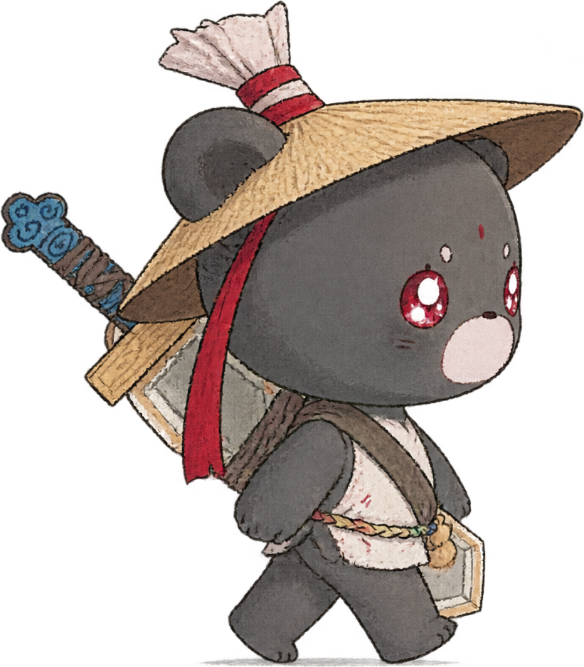
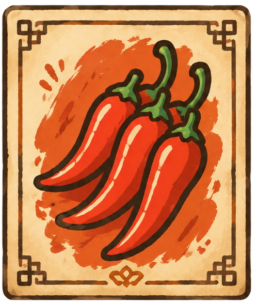
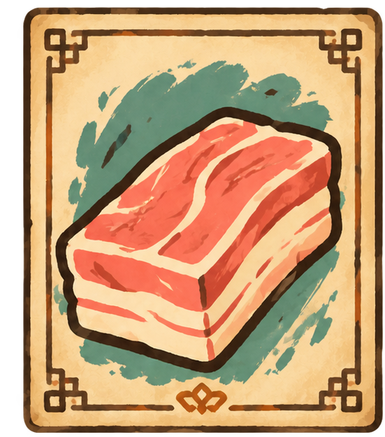
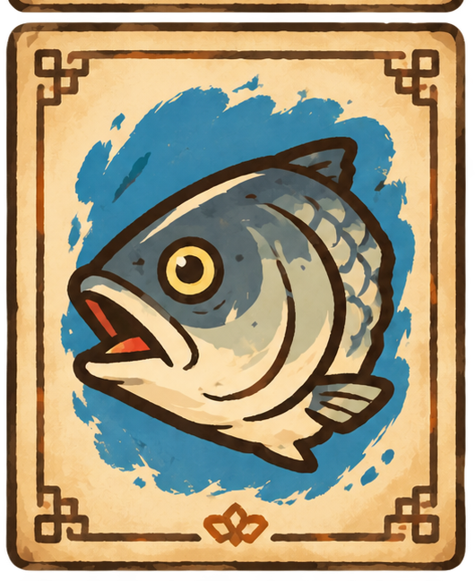
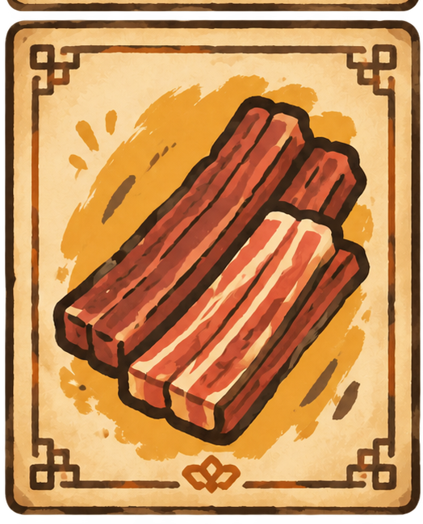

选一张食材卡，亲手下锅




行走：保持你现有识别器定义的“walk”手势，角色持续前进；stop 手势或空手待机时停止。
转向：识别 left / right，切换行走方向。
进入店铺：靠近门口后做 confirm 手势。
烹饪：选中食材卡，做 confirm 下锅；stir 搅拌，fire 调火候。
接入现有识别代码时，可调用 window.handleRecognizedGesture('walk') 等接口，不需要重新做摄像头识别。
window.handleRecognizedGesture('walk')